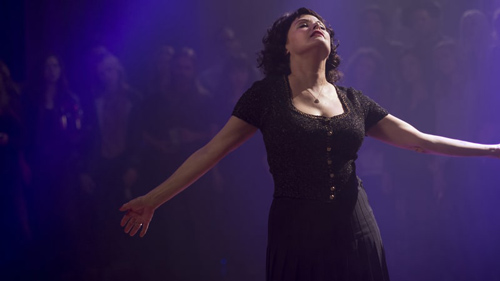

Audrey Horne dances back into our hearts (and into the unknown), Dale Cooper finally returns and David Lynch's stunning revival sets up its final act.

It's officially called Twin Peaks: The Return – and this week, David Lynch and Mark Frost's remarkable revisit of the world they created over 25 years ago finally lived up to the name. Dale Cooper is back. And Audrey is too.
With only one week and two hours remaining, this season/series revival had spent nearly its entire running time chronicling the (mis)adventures of a Coop far from the one we knew and loved all those years ago – and that's not even counting the evil doppelganger who escaped the Black Lodge into our world. Our beloved federal agent may have finally escaped that zig-zagged hellscape, but he wound up trapped in the life of a Las Vegas insurance agent named Dougie Jones. Episode after episode, "Dougie" was unable to remember not just his past but, like, how to speak in complete sentences. Somehow, this didn't prevent our hapless hero from surviving multiple assassination attempts, winning both the local mob bosses' favor and thousands of dollars at the slots ("Hell-oooooooo!"), making sweet love to Naomi Watts and consuming his fair share of damn good coffee and cherry pie. It was as if his innate Coop-ness was still shining through, guiding him through life's dangers even if he was incapable of figuring out how a door works.
Then, last week, something changed. Hearing the name of his old mentor Gordon Cole in the movie Sunset Boulevard, "Dougie" was somehow triggered into jabbing a fork into an electrical outlet, sending him into a coma. What emerges on the other side in this episode is wonderful even beyond the imagining of people who've waited for this moment for two decades and counting.
"You are awake," says the one-armed man Phillip Gerard in a vision.
"One-hundred percent," says Dale – the real Dale – in response.
Welcome back, Cooper — the do-gooder, go-getter and wrong-righter whose decency shone like a beacon through all of the darkness all those years ago. The music that accompanies his awakening is the Twin Peaks theme itself. He even still loves and cares for Janey-E and Sonny Jim, the family you might have expected him to simply abandon. By the time his insurance-agency boss Battlin' Bud Bushnell warns him the FBI is looking for him and he turns to the camera and says, "I am the FBI," it's hard to believe there was a single Peaks freak on the planet who wasn't either screaming for joy or a blubbering mess.
And the resurrections didn't stop there. After a slew of complaints that the depiction of Sherilyn Fenn's one-time ingenue Audrey Horne was somehow out-of-bounds, a show-stopping Roadhouse scene – pretty much literally, since everyone else halts what they're doing and moves out of her way – features her doing an unexpected command performance of "Audrey's Dance," her signature sensuous shuffle from the show's pilot. As the club's patrons respectfully sway from side to side and her asshole spouse looks on in something between disgust and amazement, she dances like there's proverbially no one watching.
Then a screaming man assaults another patron, shattering the rapture, and Audrey launches herself at her husband. "Get me out of here!" she begs. And poof – she's out of there alright, and into … nowhere? Everywhere? From her to eternity: In a shot that lasts only a handful of seconds, we see her looking at her far less made-up face in a mirror, a blank white background all around her. Wherever she is, we've never seen anything like it in any Twin Peaks iteration. Is it connected to the "white room" that Lynch, an avid practitioner of Transcendental Meditation, has used as an image to describe the unified-field consciousness he says he taps into with the technique? Is it the White Lodge itself? Will that strange hum in her dad Ben's office announce her return, the way it did in Coop's hospital room? We've got two more episodes to find out.
And we'll be spending that time in company that's markedly more pleasant, thanks to the abrupt departure of several of the season's villains. In a sequence that veers from goofy comedy to white-knuckle thriller and back again, the Coopelganger's henchmen Hutch and Chantal are unceremoniously gunned down by an angry accountant (!) in a road rage incident as they stake out Dougie's house. His kind-hearted crimelord pals the Mitchum Brothers look on in amazement: "What kind of neighborhood is this?" "People are under a lot of stress."
Elsewhere, the False Coop leads his son Richard Horne (paternity: confirmed) to an untimely death of his own, using him as a guinea pig to test the coordinates for the Lodge that he's spent the whole season uncovering. The young thug appears to burn with electricity from within before exploding in a flash of sparks – leaving the scene's cataclysmically stoned onlooker Jerry Horne to blame his "bad binoculars" for the sight.
Finally, and tragically, Diane reveals the truth about herself to Gordon, Albert and Tammy – and dies as a result. Under the strain of resisting the Manchurian Candidate programming of the Black Lodge Dale – a strain only an actor as superhumanly expressive as Laura Dern could properly pull off – Cooper's one-time gal Friday tells the gut-wrenching story about how a visit from what she thought was her old boss devolved into pure sadism. She recalls being dragged to the demonic meeting place called the Convenience Store, then starts warning the group "I'm not me! I'm not me!" She draws a gun, the agents shoot back … and she vanishes into the Lodge, where the one-armed man watches as she disinterates. She's been a manufactured entity – a tulpa – like the original Dougie Jones this whole time.
Even as Lynch and Frost hit the season's highest highs, they still have fresh hells to unleash. What will they do for the grand finale next week? In lieu of a prediction, we'll just quote Agent Cooper himself: "I have no idea where this will lead us. But I have a definite feeling it will be a place both wonderful and strange."